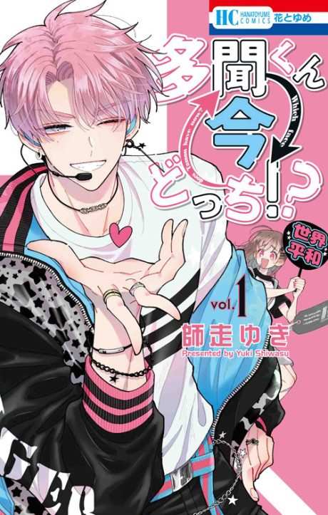

Anime
Anime
MangaTamon's B-Side
多聞くん今どっち！？
The anime takes the story to Unclear.
7.8AniList
—Animeter
13 epEpisodes
Anime finished. Where does the manga pick up?
StatusNo source yet
We looked for where the anime ends in the manga but found no source we trust yet. The manga is still running.